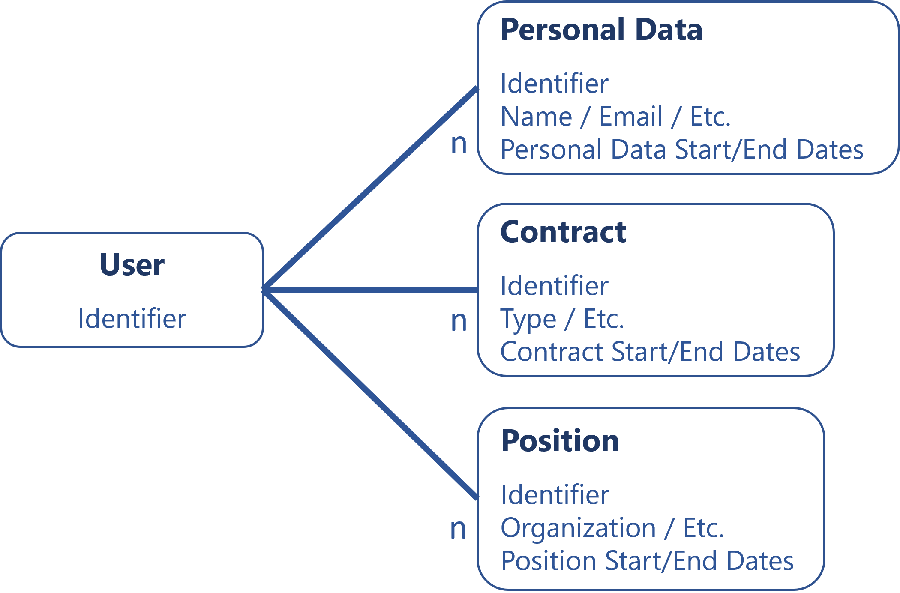
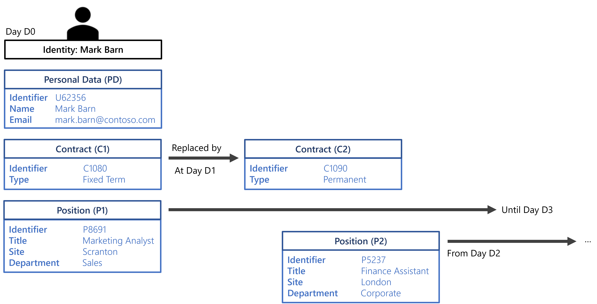
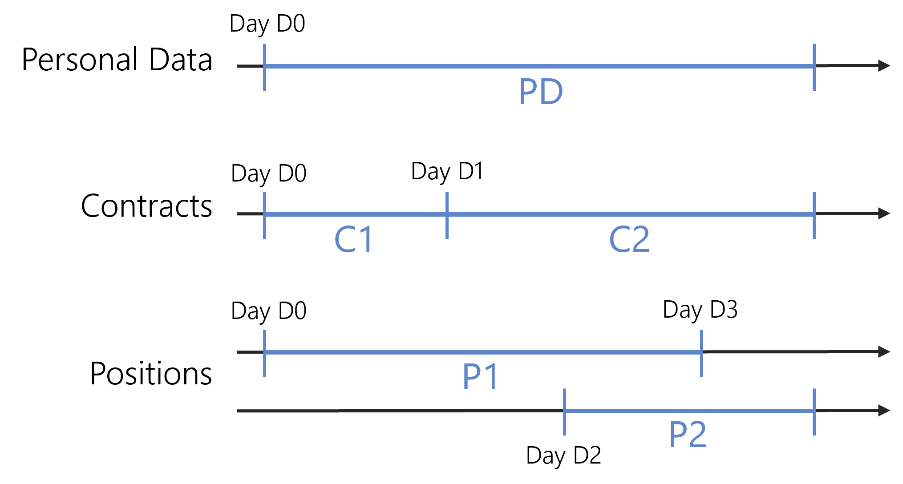
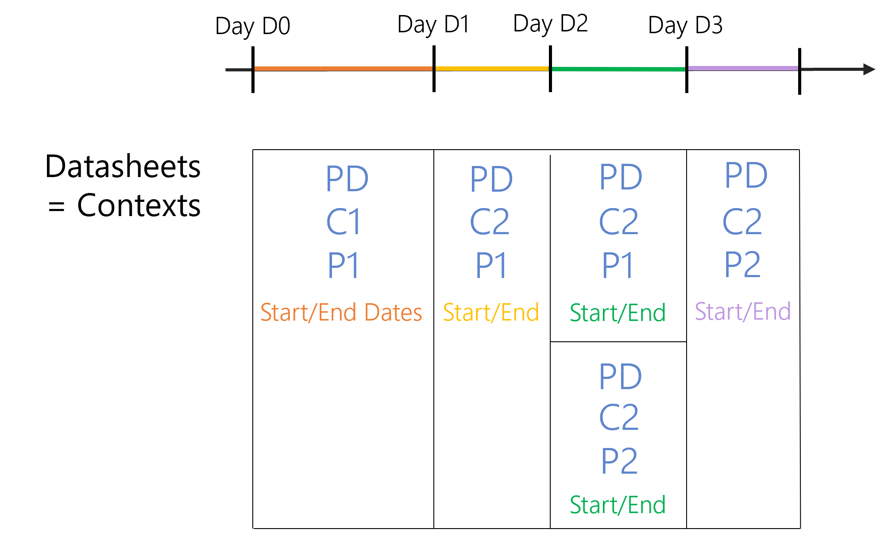

Position Change via Records
Identities' Joiners, Movers and Leavers (JML) process can be made easy by using the adequate model: records and contexts.
In Identity Manager, position changes are made through workflows or through synchronization to the HR system.
Overview
The entitlements of a user must be updated with the user's position changes: the entitlements needed for the previous position are removed, and the entitlements needed for the next position are added. This is essential to prevent users from cumulating entitlements when moving.
Just like onboarding, the entitlement fulfillment can be performed either by using Identity Manager's suggestions for the needed entitlements and adjusting them, or trusting Identity Manager with an automated fulfillment.
Identity Manager's calculations for entitlement assignments rely on heuristics, through identities' key properties called Entitlement Management .
For example, consider an entity type modeling identities with their job title, department and location.
Then a user working as a accountant in Paris will receive different entitlements from another user working as a marketing specialist in Scranton.
Hence entitlement assignment is usually based on identities' positions.
Within the company, an identity can hold one or several positions, sometimes several positions simultaneously.
A Model for Identity Changes
Any change in an identity's lifecycle, such as a position change, usually entails a change in a given set of properties simultaneously.
For example, a position change can typically trigger a change at least in the job title and location, together with the position start and end dates.
It seems natural to model identities by splitting their properties into three entities: one for users' personal data, one for their contract(s) and one for their position(s):

A user can have several positions over time, even simultaneously. A user's contract can change over time too. Even personal data is subject to change. This is why we can have several sets of personal data (and/or several contracts and/or several positions) for a single user, and also why the User entity is meant to contain only users' unique identifiers.
For example, in personal data a marriage can imply a name change, a user can start with a fixed-term contract and change to a permanent one, and position change is obvious.
Even without allowing simultaneous positions, contracts or personal data sets, this model helps anticipate upcoming changes.
Contexts
The model is supposed to facilitate the Provisioning provisioning of user data and entitlements, yet this first model does not meet all expectations. In case of multiple personal data sets for a single user over time, or multiple contracts, or multiple positions, which values should be used to apply the rules of the role model? How to combine all start and end dates to make sure that all rules are applied based on the right input? These issues imply complex C# expressions in provisioning rules.
For example, let's write a C# expression to compute users' display names based only on their first and last names. To make sure that display names are computed using valid input, we write the following:
C#:user:return user.PersonalDatas.Where(personalData => personalData.Start < DateTime.Now && personalData.End > DateTime.Now).Select(personalData => personalData.FirstName + ' ' + personalData.LastName).FirstOrDefault();Now a more complex example: let's write a C# expression to compute users' departments based on their organization's display names, but also their employee identifiers in parenthesis:
C#:user:return user.Positions.Where(position => position.Start < DateTime.Now && position.End > DateTime.Now).Select(position => position.Organization.DisplayName).FirstOrDefault() + " (" + user.PersonalDatas.Where(personalData => personalData.Start < DateTime.Now && personalData.End > DateTime.Now).Select(personalData => personalData.EmployeeId).FirstOrDefault() + ")";
To simplify the expressions, the model needs to be "flattened" in order to provide all the data of a given user, valid at a given date. Hence users must be modeled by a set datasheets generated by Identity Manager, where all values in one datasheet are valid on a given time period.
For example, consider the following situation: Mark Barn is a user who has, at day D0, a given set of personal data, a given contract and a given position. At day D1, his contract changes from fixed-term to permanent. At day D2, he starts an additional position. The two positions overlap from day D2 to day D3 when the first position ends.

Over time, the three entities are as follows:
From this, Identity Manager is able to combine the start and end dates of all entities at all times to generate the following datasheets, named contexts:
Contexts are the result of the combination of all entities (personal data, contract and position) so that all values contained in a given context are valid on a given period of time.
Users can be modeled by up to n*n*n contexts, and even more when elements overlap (positions in this example).
The complexity that comes from the combination of all start and end dates is tackled by Identity Manager's engine when it generates users' contexts. As the start and end dates of each value are pre-computed by Identity Manager, this user model highly simplifies provisioning rules.
The C# expressions from the previous example can be written, for the same result, as the following, first for users' display names, then departments:
C#:record:return record.FirstName + ' ' + record.LastName;C#:record:return record.Organization.DisplayName + " (" + record.EmployeeId + ")";
Records
The final step to a viable model is to find a way to store optimally this context model in the database, in order to be able to perform fast requests. Hence, the final model gathers all entities (personal data, contracts and positions), including their respective start and end dates, into a single entity named records, where a context is a record instance:

While there are as many contexts for a user as the number of changes in the user's datasheet, there are only as many records as needed to store each value at least once.
With the example used for the explanation of contexts with
PD,C1,C2,P1andP2, we generate 5 contexts but store only 2 records:{PD; C1; P1}and{PD; C2; P2}.From these 2 records, we can rebuild the 5 contexts.
Contexts can be considered as the conversion tool between the two user models.
This way, the model stores only Max(n) records instead of n*n*n.
Plus, Identity Manager does not need to archive old data, because records and contexts are used only to simplify the application of provisioning rules. As only valid values are provisioned, there is no need to keep track.
This means that a change to be effective immediately will not trigger the creation of a new record nor a new context. The record containing the old data will simply be updated.
A change to be effective in future can trigger the creation of a new record.
Configuration
This identity model can be implemented by configuring a Context Rule and Record Section :
<ContextRule Identifier="Directory_User" DisplayName_L1="Directory_User" Policy="Default" SourceEntityType="Directory_User" ResourcesBinding="Records" ResourcesStartExpression="C#:record:return record.StartDate ?? record.PositionStartDate ?? record.ContractStartDate;" ResourcesEndExpression="C#:record:return record.EndDate ?? record.PositionEndDate ?? record.ContractEndDate;" ExcludeExpression="C#:record:return record.IsDraft.GetValueOrDefault();" RiskFactorType="Max"
B0="Directory_UserRecord:Organization"
B1="Directory_UserRecord:Title"
B2="Directory_UserRecord:Site"
B3="Directory_UserRecord:Site.Region.Country"
B4="Directory_UserRecord:UserType.Category"
B5="Directory_UserRecord:Organization.Type"
B6="Directory_UserRecord:Subsidiary"
B7="Directory_UserRecord:ExternalCompany"
/>
Personal data section (default section):
<RecordSection Identifier="Directory_UserRecord_Default" DisplayName_L1="User Properties" SourceEntityType="Directory_User" ResourceEntityType="Directory_UserRecord" StartProperty="StartDate" EndProperty="EndDate" InstanceKeyExpression="C#:record:return record.StartDate.HasValue ? record.StartDate.Value.ToString("yyyyMMdd") : string.Empty;"></RecordSection>
Contract section:
<RecordSection Identifier="Directory_UserRecord_Contract" DisplayName_L1="Contract Properties" SourceEntityType="Directory_User" ResourceEntityType="Directory_UserRecord" StartProperty="ContractStartDate" EndProperty="ContractEndDate" IsDefaultBoundariesSection="true" InstanceKeyExpression="C#:record:return record.ContractIdentifier;"> <Property Property="UserType"/> <Property Property="ExternalCompany"/> <Property Property="Subsidiary"/></RecordSection>
Position section:
<RecordSection Identifier="Directory_UserRecord_Position" DisplayName_L1="Position Properties" SourceEntityType="Directory_User" ResourceEntityType="Directory_UserRecord" StartProperty="PositionStartDate" EndProperty="PositionEndDate" InstanceKeyExpression="C#:record:return record.PositionIdentifier;"> <Property Property="PositionIdentifier" /> <Property Property="JobTitle" /> <Property Property="OfficeNumber" /> <Property Property="Organization" /> <Property Property="Site"/> <Property Property="Title" /> <Property Property="Office" /> <Property Property="Manager" /> <Property Property="IGAManager" /> <Property Property="EffectiveIGAManager" /> <Property Property="IsMainPosition" /></RecordSection>
Position Change
The position change process for an existing worker is materialized by the assignment/update/removal of a record to/from an identity. This assignment/update/removal triggers the fulfillment of the entitlements required by the user based on the properties of a valid record.
When several contexts are valid at the same time for a given identity, conflicts can arise during entitlement assignment. They are solved by Identity Manager's engine that establishes a priority between valid contexts.